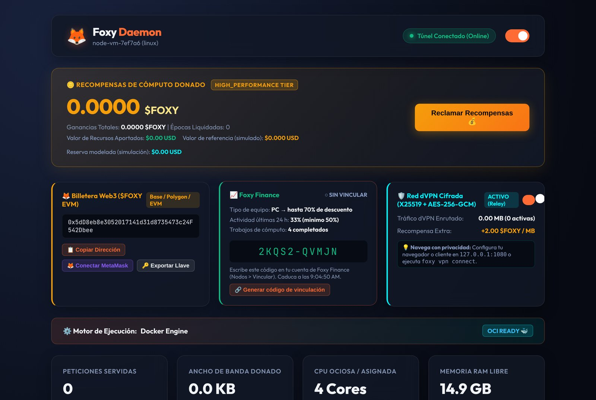

Turn idle hardware into a decentralized cloud
Foxy Network is an open-source DePIN. Run a lightweight node on Windows, macOS or Linux to host web apps at the edge, relay an encrypted VPN and run compute jobs, and earn $FOXY for every minute and megabyte you contribute.

Everything a node can do
One install, three ways to contribute. Each one is metered and rewarded.
Edge hosting
Serve web apps through reverse tunnels. No open ports or public IP, with failover when a node goes offline.
Encrypted dVPN
Relay other users' traffic with a per-session X25519 + AES-256-GCM tunnel. Your local network stays off-limits.
Verified compute
Run Monte Carlo, linear algebra and latency jobs from a fixed catalogue. Replicas cross-check results before anyone is paid.
$FOXY rewards
Settled every 30 seconds. Claim signed vouchers into an ERC-20 contract on Base, Polygon or Arbitrum.
Built-in wallet
An EVM wallet is created for you, or plug in your MetaMask address to receive rewards directly.
Runs everywhere
Windows tray and silent modes, macOS launchd and Linux systemd services, from a laptop to a bare-metal server.
How it works
Three components, all in one open-source repository.
Donor node
Runs on your machine. Opens an outbound tunnel to the gateway, serves workloads, relays dVPN sessions and executes compute jobs.
Gateway
Public entry point. Routes web requests and VPN sessions to the right node, and serves .fox domains over HTTPS.
Controller
Control plane. Registers nodes, measures uptime, keeps the rewards ledger and signs the vouchers you redeem on-chain.
Earn $FOXY
Rewards per 30-second epoch, multiplied by your hardware tier (1.0×, 1.5× or 2.0×).
| Contribution | Reward |
|---|---|
| Uptime | 0.25 $FOXY / minute |
| Web bandwidth served | 1.50 $FOXY / MB |
| dVPN traffic relayed | 2.00 $FOXY / MB |
| Verified compute unit | 3.50 $FOXY / unit |
$FOXY is not deployed on mainnet yet: until a token contract is configured, claims run in simulation mode. $FOXY has no guaranteed price.
Built for Foxy Finance
Foxy Network is the infrastructure layer of Foxy Finance, a quantitative trading platform. Link your node with a one-time code and get a discount for the hardware you contribute.
| Your device | Foxy Finance discount |
|---|---|
| Android phone (Termux) | 25 % |
| Raspberry Pi / single-board computer | 50 % |
| PC / laptop | 70 % |
| VPS / bare metal (4+ cores, 8+ GB) | 100 % · Pro Quant plan |
Discounts apply while the node stays online at least half of the last 24 hours. Developers: see the integration guide and the JavaScript and Python SDKs.
Get started in a minute
You need Node.js 20+. Then open http://localhost:4040 to see your node.
git clone https://github.com/IAmMRPrince/Foxy-Network.gitcd Foxy-Networknpm installnpm startFAQ
What is Foxy Network?
An open-source DePIN (decentralized physical infrastructure network). A lightweight donor node lets anyone contribute spare CPU and bandwidth to host web apps, relay an encrypted VPN and run compute jobs, earning $FOXY rewards.
Is it safe to run a node?
The exit relay only connects to public addresses on web ports and never to your local network, the dashboard only listens on your own machine, and compute jobs come from a fixed catalogue with no remote code. The project is still a prototype and has not been externally audited.
Is $FOXY a real cryptocurrency?
$FOXY is an ERC-20 smart contract ready for EVM chains such as Base, Polygon or Arbitrum. It is not deployed on mainnet yet; until a contract is configured, reward claims run in simulation mode. $FOXY has no guaranteed price.
Which devices are supported?
Any Windows, macOS or Linux machine with Node.js 20 or newer, from laptops and Raspberry Pi boards to VPS and bare-metal servers.